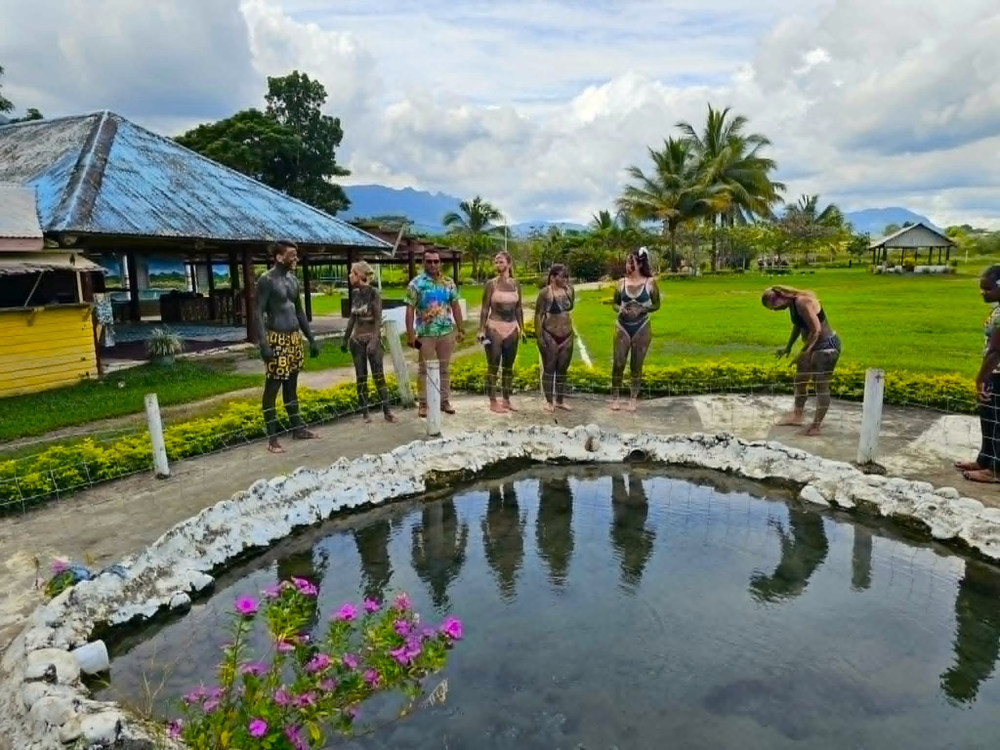
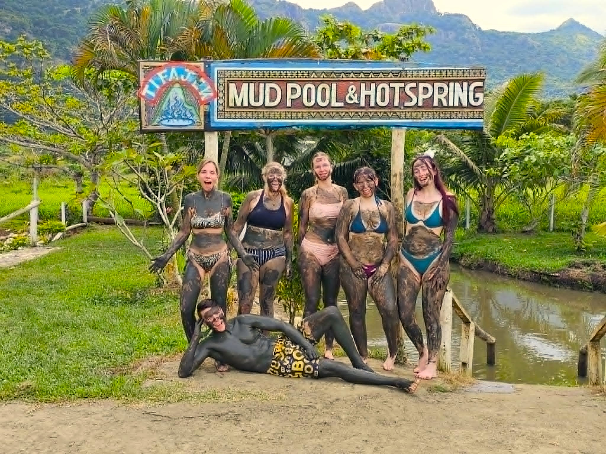
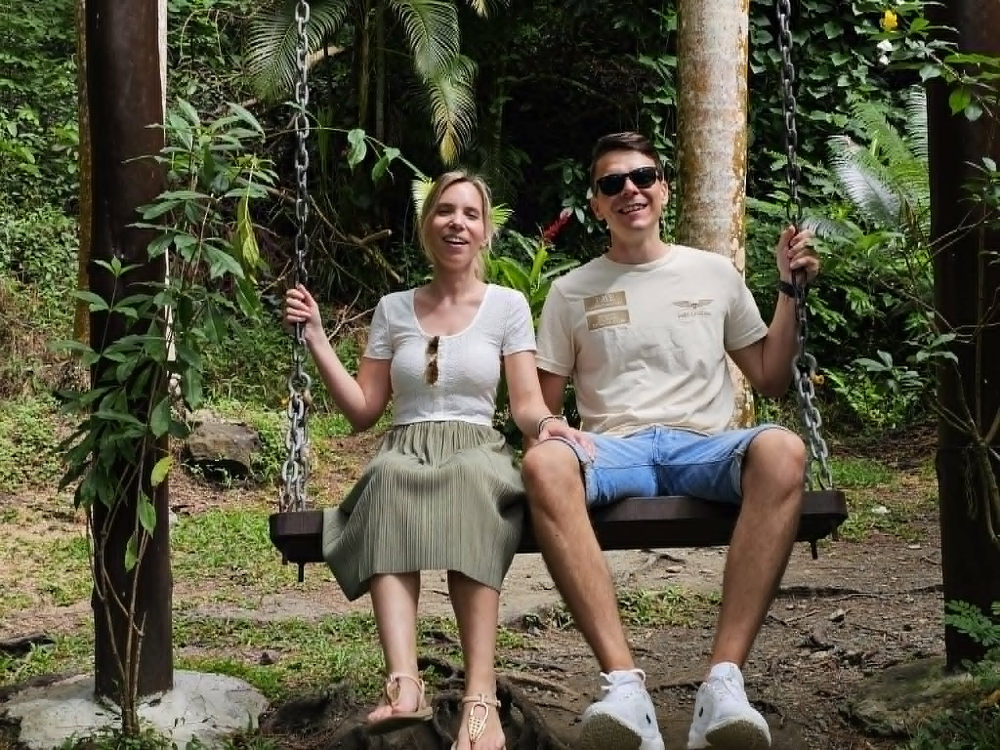
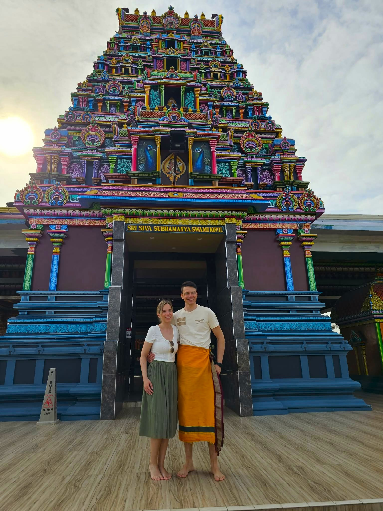

Adventure & Fiji Culture

Hot Spring
Relax in natural hot springs, where warm geothermal waters flow through volcanic earth, offering a soothing and therapeutic experience. Enjoy the calming mineral-rich pools surrounded by lush tropical scenery, perfect for unwinding and rejuvenating in Fiji’s peaceful natural environment.

Mud Pool
Experience Fiji’s famous natural mud pools, where warm volcanic mud offers a fun and therapeutic spa experience. Cover yourself in mineral-rich mud believed to detoxify and soften the skin, then rinse off in soothing hot spring waters surrounded by lush tropical scenery.

Kula WILD Adventure Park
Visit Kula Wild Adventure Park, Fiji’s premier conservation park, where you can explore native wildlife, enjoy interactive animal encounters, and experience thrilling nature trails through lush coastal forest. Discover endangered species, colorful birds, and exciting eco-adventures perfect for families and nature lovers.

Garden of the Sleeping Giant
Explore the Garden of the Sleeping Giant, a lush tropical paradise nestled at the base of the Nausori Highlands near Nadi. Wander through vibrant orchid gardens, shaded rainforest trails, and peaceful walking paths surrounded by exotic plants. This serene escape offers breathtaking mountain views and a tranquil experience of Fiji’s natural beauty.

Sri Siva Subramaniya Swami emple
Explore the the largest Hindu temple in the Southern Hemisphere. Admire its colorful Dravidian architecture, intricate carvings, and vibrant spiritual atmosphere while learning about Fiji’s rich Indian cultural heritage and religious traditions.